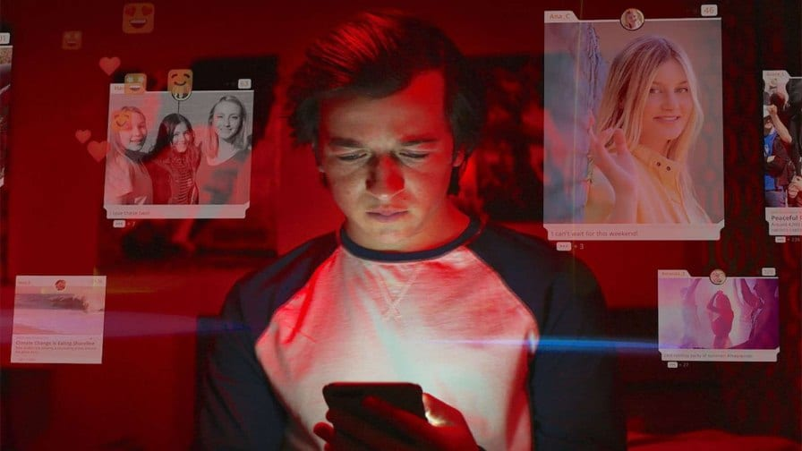

Dilema das Redes
Dilema das Redes
No dia 19/02, sexta-feira, a Professora Lúcia passou um documentário para a turma assistir como atividade avaliativa. O
Documentário "O Dilema das redes" expõe como as redes sociais controlas e vigia nossas vidas. A todo momento nós estamos sendo
vigiados em "prol de uma melhor experiência como app". Onde estamos, com quem estamos, sobre o que estamos falando, tudo isso
é monitorado 24 horas por dia. O documentário da Netflix critica quantas horas por dia estamos conectados, e o quanto esse tempo
que passamos online interfere nas nossas vidas.
Lúcia passou uma análise pessoal sobre o trabalho. Perguntas que atingiam direteamente o "eu" de cada um, nos fazendo repensar
quanto tempo perdemos com isso.
